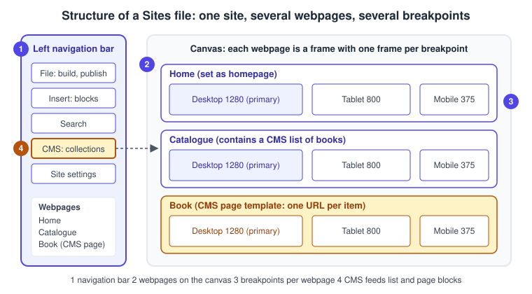
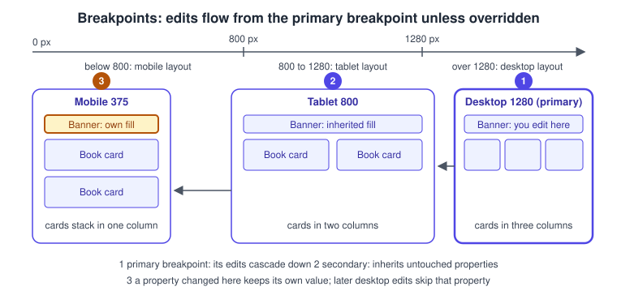
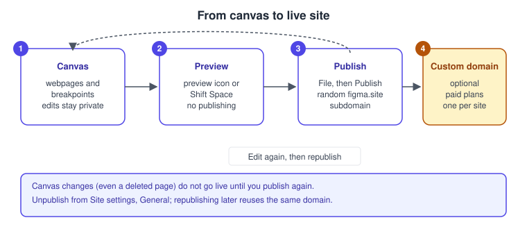
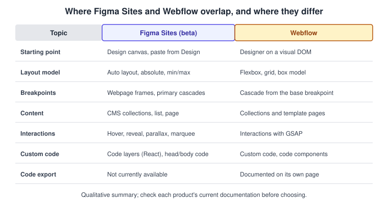

Figma Sites
|
This content was generated with the assistance of AI and should be verified against the official documentation before being relied on in production. |
This page was written on 2026-10-30 against the UI3 interface. Figma Sites is a separate product in the Figma family: a file type in which you design, prototype and publish websites without leaving Figma. It was released in open beta at Config 2025 and the help centre and the Figma release-notes navigation still label it Beta on the check date. Figma’s beta-features article says that editing and publishing a site need a Full seat, that Dev, Collab and View seats can only view site files, and that beta features can change. Other Sites articles say the feature is available on "all plans" or list Starter, Professional, Education (not K-12), Organization and Enterprise, but publishing to a live domain is a paid-plan feature, and the articles are not consistent about what the free plan can do. Treat the plan and seat details below as the state on the check date and confirm them in the linked articles, as described on Plans, Seats and AI Credits. The "Content seat" is not documented in the current help centre and is not covered here.
The running example is the Bookshelf team building a small public site: a home page, a catalogue page and one page per book. Everything below follows that site from a blank file to a published address. For the product map see Introduction and Product Family.
How a Sites file is organised
A Sites file opens in an editor that looks like a Figma Design file with a different left navigation bar. The bar holds File (build and publish), Insert (prebuilt elements, templates, embeds and design libraries), Search, CMS (create and manage site content) and Settings (search engine, accessibility and navigation options). The toolbar adds webpages, frames, images, text and shapes, and the Actions menu gives access to Figma AI tools. The right sidebar has a Design tab for the selected object and an Interaction tab for animations and effects; what you can do depends on your edit or view-only permission on the file. New files open with a template picker, and you can also copy designs from Figma Design or assemble the site from prebuilt blocks such as headers, footers and sections.

Source: Figma Learn: Explore Figma Sites
The same design tools as Figma Design apply: frames, auto layout, shapes and components. Layout is covered on Auto Layout and components on Components and Instances; Sites adds the webpage, the breakpoint and the web-specific controls described below.
Webpages
A webpage is the unit that becomes a URL. Click the plus icon next to Webpages in the left sidebar, or choose the Webpage tool in the toolbar and press W. The page appears on the canvas, in the Webpages list and in the layers. New pages use absolute positioning by default; apply auto layout to make a page responsive.
-
Duplicate a page by right-clicking it and choosing Duplicate, or with Command D (macOS) or Control D (Windows).
-
Delete a page by selecting it and pressing Delete. This also removes its metadata in the website settings and its child layers, so move layers you want to keep onto the canvas first.
-
Reorder pages by dragging them in the Webpages list; this does not move them on the canvas.
-
Pages cannot be nested in the list, adding slashes to a page name does not create nesting, and pages cannot be grouped into sections.
-
To make a different page the homepage, right-click it in the Webpages list or on the canvas and choose Set as homepage. Republish for the change to take effect; the old and new homepages keep their metadata in the website settings.
-
A design pasted from Figma Design must be moved into a webpage before it can be previewed or published.
Source: Figma Learn: Set a new homepage
Breakpoints and responsive layout
Every webpage starts with one desktop breakpoint, the primary breakpoint. The predefined widths offered when you add another are Desktop 1280, Tablet 800 and Mobile 375, plus a Custom option. A breakpoint’s width marks where its layout starts: with desktop at 1280, tablet at 800 and mobile at 340, anything wider than 1280 px uses the desktop layout, 800 to 1280 px the tablet layout and anything narrower than 800 px the mobile layout. Add one with the plus button in the webpage header on the canvas, change its width in the right sidebar (neighbouring ranges adjust), and delete it by selecting it and pressing Delete. Breakpoints are available on all plans and need edit access to the file.
Edits propagate in one direction. A change made in the primary breakpoint cascades to the other breakpoints, but only for properties that have not been changed there: if you changed a frame’s fill on mobile, a later fill change on desktop updates desktop and tablet only, while a height change still reaches all three. A change in a secondary breakpoint stays in that breakpoint. Right-click an object and choose Reset all changes to make it inherit the primary breakpoint again. Deleting an object in a secondary breakpoint only hides it there (find it with the hidden icon in the layers panel), and adding an object in a secondary breakpoint shows it on that breakpoint alone. In a secondary breakpoint you cannot move layers into or out of other layers, group or frame objects, or move a layer out of the webpage. To work mobile-first, right-click a non-primary breakpoint and choose Set as primary breakpoint.

Figma’s responsive tips recommend applying auto layout to the webpage itself from the primary breakpoint, using Fill container for top-level sections (that option exists only inside another auto layout frame), preferring frames over groups, and setting minimum and maximum widths so layers behave between breakpoints, for example a maximum width on Fill container content in the largest breakpoint. A component set whose variant property values are named after your breakpoints (Desktop, Mobile) shows the matching variant automatically when you drop an instance on a multi-breakpoint page; see Variants and Component Properties. The general responsive concepts are on Responsive Design.
Blocks, embeds and design libraries
The Insert menu in the left navigation bar holds ready-made blocks you drag into a layout; blocks include embeds and CMS lists and pages. Dropping an insert into the primary breakpoint adds it to all breakpoints, and dropping it into a secondary breakpoint adds it there only; clicking an insert follows the same rule based on what is selected. Adding a block to an empty webpage turns on auto layout for that page. Embeds show external content such as forms, videos or maps with editable properties in the right sidebar, but they appear only in the preview or published site, not on the canvas, and an embed can fail if the third-party site refuses to be shown in an iframe. To add your own script use the custom code setting. Design libraries are added through the Libraries icon (search or browse, then Add to file); their styles, components and variables then become available to everyone in the file, which is how a Bookshelf design system reaches the site. See Libraries and Publishing.
Copy and paste with Command C and V (Control C and V on Windows) moves design assets between Figma Design and Sites. To send a frame to Sites as a new site, right-click it and choose Copy to Figma Sites; the frame must be 1200 to 1600 px wide and you must be the file creator. Auto layout frames stay relative, other objects become absolute, and most prototype connections convert to site interactions while unsupported ones need manual fixes. Going back, embeds become static images, many interactions have no prototype equivalent, internal page links are not copied, and each webpage becomes a section holding one frame per breakpoint. Accessibility properties and annotations are hidden in the other product but return if you paste back.
Interactions
Select a layer, open the Interaction tab in the right sidebar, click Add interaction and set it up in the Interaction details panel; Shift-click several objects to give them one interaction. Each interaction has a trigger and an action. The documented types are Change to (variants), Back, Scroll to, Hover effect, Press effect, Reveal, Scroll parallax, Scroll transform, Cursor effect, Marquee, Lightbox, Spin, Mouse parallax, Typewriter, Scramble text, Draggable, Conditional and Set variable.
Documented limits worth knowing before you design: hover does not work on tablets or phones, so use a press effect on mobile breakpoints; cursor effects do not appear on mobile devices; scroll parallax is disabled for fixed or sticky elements and their children; a marquee may need clipped content because it cannot animate beyond its layer’s bounds unless content overflows; and interactions on a main component are inherited by its instances. Prototype interactions copied from Figma Design may be unsupported (for example the "Mouse move inside" trigger or Smart animate); the Review issues modal lists them. Variables and conditions are explained on Advanced Prototyping with Variables. Links to pages or external addresses have their own article.
Source: Figma Learn: Add links to a site
Code layers
Code layers put running code on the canvas: Figma describes a code layer in Figma Design as an interactive prototype backed by running code, built by prompting the AI or by writing React, and the beta-features article lists it as open beta on paid and education plans with edit access. Figma’s Figma Design article does not say whether code layers work inside a Sites file, nor their seat requirement and credit use there, so read the current help centre before relying on them in a Sites project. Their creation, credits and limits are covered on Code Layers; prompt-to-app generation is on Figma Make.
The Sites CMS
The CMS manages structured content, such as the Bookshelf catalogue, without changing the page designs, and updates show on the canvas at once. Open it with CMS in the left navigation bar. A CMS collection is a set of fields (column headers such as title, cover image or date) and items (rows); a CMS list is a repeating block that shows several items from one collection; a CMS page is a template page where each item gets its own URL with its content inserted. You can start from starter collections with sample data, from a template in the CMS category, or by importing a CSV (column headers or content may need adjusting). Edit items in the CMS panel or by double-clicking connected content on the canvas. Connected CMS data is included when you publish. The overview article says the CMS is available on all plans and needs edit access; it does not state field types, item limits or a separate beta status, so read the collection articles for those.
Accessibility settings
Select layers and pick an HTML tag in the Accessibility section of the right sidebar, or right-click a layer and choose HTML tag. To see tags in the layers panel, enable Show HTML tags on layers in Zoom/view options. Most layers default to div; Figma applies p to text, img or video to media fills, a to linked layers and button to layers with on-click interactions, and bulleted text becomes a list. Use one h1 for the main heading and h2 to h6 for subheadings without skipping levels. Add accessibility properties with Add accessibility settings: Alt text (or mark an element decorative), Label (aria-label), Hidden (aria-hidden, which makes the other settings ignored), Current item (aria-current) and Role. Requires edit access. The wider design practice is on Accessible and Inclusive Design, and web standards on Web accessibility.
Site settings
Click the Site settings icon in the left navigation bar; General holds site-wide values and each page has its own. Title, meta description, social sharing image (1200 x 630 px recommended), language code and the search-engine exclusion checkbox (a noindex tag) exist for the site and per page. Site-wide only are Google Analytics (the only analytics integration), the favicon (48 x 48 px recommended), the cookie consent banner, custom code for the head or body, and published-site access. Password protection and the cookie banner are paid-plan features, the audience choice between the open web and internal users needs an Organization or Enterprise plan, and passwords cannot be viewed again once set. You remain responsible for your site’s cookie and privacy compliance. Republish after changing settings, and use the social platforms' debugging tools to refresh cached link previews.
Publishing and domains
Preview a page with the preview icon on the webpage or with Shift Space, without publishing. Publishing is available on paid plans and needs edit access; the Education plan includes one published site with bandwidth limits, and on Organization and Enterprise plans a site can be public or internal.
-
Open the file and click the File icon in the left navigation bar.
-
Click Publish in the left sidebar and review the site details.
-
Check the title, SEO, accessibility, social-preview and password settings, then click Publish.
-
Fix anything listed in the Publish modal if publishing fails, wait a few minutes and retry.
Every webpage on the canvas is published, including dynamic CMS subpages, so move unfinished pages to another file. The site gets a random figma.site subdomain that cannot currently be changed, and its status shows Not published until it is live. Canvas changes, including deleted pages, do not go live until you publish again. You can republish a previous version from the Last published row in the Publish modal, and unpublish from Site settings, General; republishing later reuses the same domain. Code for the site cannot currently be exported for external publishing, and Figma may remove content that breaks its Acceptable Use Policy.

A custom domain can be connected on Professional, Organization and Enterprise plans after the site is published. Add it under Settings, then Domains, add the TXT and CNAME records Figma provides at your registrar and select Refresh. A site uses one custom domain at a time; wildcard domains and domain paths such as example.com/about are not supported, and Cloudflare proxying must be set to DNS only for verification. The article states a per-plan domain count and a free period that it says may change, so check it before planning; no prices are given here.
Comparison with Webflow
Both tools publish responsive sites with a CMS, interactions and custom code, but they start from different places. Sites starts from a design canvas that you already use for UX work and can receive pasted frames; Webflow is a dedicated site builder with a box model, classes and deep hosting options. The table summarises the documented differences at the level of the concepts; it is not a feature-by-feature verdict, and Sites is still in beta.

Source: Figma Learn: Explore Figma Sites
Procedure: build and publish the Bookshelf site
-
Create a Sites file from the file browser and choose a template or start blank.
-
Press W and add webpages named Home and Catalogue; right-click Home and choose Set as homepage.
-
In the Home webpage select the primary desktop breakpoint, apply auto layout and build a header, hero and footer from Insert blocks.
-
Add Tablet 800 and Mobile 375 with the plus button in the webpage header and check each width.
-
Open CMS, create a Books collection with title, cover and summary fields, and add a CMS list to Catalogue and a CMS page for one URL per book.
-
Select the Add to shelf button, open the Interaction tab and add a Hover effect; add a Press effect on the mobile breakpoint.
-
Give the cover images alt text and mark the headline as
h1in the Accessibility section. -
Open Site settings, set the title, description and language, then press Shift Space to preview.
-
Click File, then Publish, and check the figma.site address.
Source: Figma Learn: Create a CMS page
Where older guides are outdated
-
Books that show the old interface (UI2) describe a toolbar and panels that no longer exist; UI3 has been mandatory since 2025-04-30, and the left navigation bar changed again on 2026-01-07.
-
Seat wording in older books ("editor", "viewer", paid seats) predates the Full, Dev, Collab and View seats of 2025-03-11; for Sites a Full seat is what edits and publishes.
-
Third-party plugins that older books name for sending designs to Webflow or Framer must be re-checked before use; treat them as ecosystem tools, not Figma features, now that Figma has its own Sites product.